项目网址:https://karyll-star.github.io/RePower-360/
行业正从「设备狂飙交付期」步入「存量衰减与出保断崖期」。
本方案以 Re-Pulse 移动活化工作站 + Re-Bridge 边缘网关 为实体切入，
以资产健康中台为诊断中枢，以增量分成为造血引擎，盘活天量「孤儿电站」。
开场定调：今天汇报的题目叫「智储重生 RePower-360」。一句话讲清我们在做什么——储能柜卖出去之后的十年，才是真正花钱的地方，我们要做的是这十年的生意。
先给三个数字定锚：78.3GW 是存量，说明蛋糕已经存在；14% 是电芯健康度极差，说明蛋糕上有明确的痛点；40%+ 是后市场在全生命周期价值里的占比，说明这块蛋糕足够大。
过渡：所以问题不是"要不要做后市场"，而是"后市场里哪一块最值钱、我们凭什么切得动"。
BRIEF · 设计任务书 2-1
交付格式：PPT 或 PDF，注明使用的 AI 工具名称与版本；Demo 需 MP4。
本 deck 为网页版汇报，可直接全屏演示、一键导出 PDF、录屏交付。
调研简报 → PART 1（P5–16）
方案全景 → PART 2（P17–30）
产品族介绍 → PART 3（P31–38）
商业与盈利 → PART 2/4（P29–30 · P39–42）
这一页是应答页，先把老师的题目摆出来，再逐条对应，让评审一眼看到我们没有漏项。
重点强调第四点"商业模式与盈利周期"——这是工业设计作业里最容易被忽略、但恰恰决定方案能否成立的部分，我们有专门测算（P29–30）。
AGENDA · 汇报结构
操作提示：← → 翻页 · O 目录总览 · S 演讲者视图（双屏逐字稿）· F 全屏 · P/Ctrl+P 导出 PDF
目录页快速过一遍，让评审建立预期：前面讲为什么有机会，中间讲我们做什么，然后重点讲产品长什么样，最后回到商业能不能成立。
如果时间紧张，P1 可以只讲 P6/P11/P13 三页，把时间留给 P3 产品设计部分。
CONTEXT · 一页讲清
它其实是企业装的「超大型工业充电宝」
典型规格：100kW/215kWh ~ 125kW/261kWh 磷酸铁锂一体柜，厂区户外落地部署，设计运行周期 10~15 年。
柜子还能用，但因为几百颗电芯不一致，每天少放的电，就是企業每月真金白银的损失。
这一页是给非专业听众的翻译页：储能柜 = 工业充电宝，靠峰谷价差赚钱。
关键铺垫是"一日两充两放"和"木桶效应"——后面所有技术痛点都从这两点推导出来，先埋好。
过渡：既然柜子靠"每天放多少电"赚钱，那我们看看到底是什么在偷走它的放电量。
发展阶段 · 发展预期 · 可拓展板块 · 未被挖掘的商业模式
进入第一部分。这一部分的任务是用数据证明机会是真的，而不是我们自己觉得有机会。
结构上按任务书的四个问题走：现在什么阶段 → 未来多大 → 还有哪些板块 → 哪些模式没人做。
SCALE · 存量基本盘
工商业分布式储能备案与落地项目数万台，主要集中在峰谷价差显著的工业大省： 浙江、广东、江苏、山东。
价差越大 → 套利收益越高 → 业主对"少放的电"越敏感 → 后市场付费意愿越强。
四个数字一起念：78.3GW 是存量、184.2GWh 是能量规模、43.7GW 是单年新增、100%+ 是增速。
强调一句：工商业柜不是分散在全国，而是密集堆在四个省——这对我们后续做网格化地推、控制上门成本非常关键（P30 会用到）。
TIMING · 时间拐点
绿色窗口为第 3~5 年「损耗故障期 + 原厂出保」叠加段：SOH 加速下滑，维护告警强度陡升
2022—2023 年爆发期安装的柜机，正密集迎来这个拐点。后市场具千亿级刚需空间，且需求被动产生、不可回避。
用设备健康趋势曲线替代抽象浴盆曲线：前两年偶然失效后，第 3~5 年 SOH 加速下滑、维护告警强度陡升——这就是"拐点"。
最有力的是两条曲线的叠加：性能开始衰减的时间，和原厂质保到期的时间几乎是同一年。业主最需要时，恰好被厂家"放手"。
FORECAST · 发展预期
电芯成本探底 → 前端硬件越来越便宜；而巡检运维、健康度修复、消防更换、残值回收 在 10~15 年运行周期里反复发生。占比由初期不足 10% 跃升至 40%+（中间年份为等趋势插值示意）。
2024 年 78.3GW 为 CNESA 实际值；2025—2030 按 CAGR 插值推算 （理想场景 24.5% → 291.2GW，保守场景 → 200GW+）。
容量衰减至 75%~80% 时必须退出高压峰谷套利场景，2026 年起每年退役的工商业电芯容量呈指数级攀升， 催生梯次利用与低压再制造产业——叉车电池、观光车电池、离网微网。
左图是本页真正的论点：价值重心在生命周期里后移，后市场从不足 10% 涨到 40%+，这就是"倒挂"。
右图回答"盘子有多大"：2024 年 78.3GW 是实测地基，2030 年理想 291.2GW、保守 200GW+，CAGR 24.5%。
倒挂的因果要讲清：硬件一次性买卖越来越便宜，而运维是十年里反复发生的支出，所以钱必然往后市场走。
FALLOUT · 行业洗牌
这正是方案第一环「重新上云」的直接来源（P19）。
价格战数据：电芯从约 0.9~1.0 元/Wh 掉到 0.35~0.4 元/Wh 以下，系统中标均价腰斩。
这一页要讲出画面感：一个工厂的储能柜，屏幕还在亮，但云服务器早停了、4G 卡也欠费了，业主甚至不知道它现在健康度多少。这就是"孤儿电站"。
TECH · 实测数据
国家重点研发计划支持下、CNESA 与西清能源联合发布的《储能电站用锂离子电池健康评估实践分析》： 在检出的安全隐患中，电芯一致性劣化与 BMS 故障占比最高；电站内部单体电芯健康度（SOH） 极差最高可达 14%。
统计基于国内实际投运储能电站运行数据，投运未满 3 年的站点已出现 13.81% 极差。
装了 215kWh，实际只能放 180kWh —— 这 35kWh 每天都在流失。
这一页是整个方案的技术地基，务必讲透：不是电池坏了，是几百颗电芯"不齐了"，而整柜容量由最差那颗决定。
那个"装了 215kWh 只能放 180kWh"的例子可以现场口算：每天两充两放，按 0.8 元价差，一个月就是几千块。
底部配图按三段讲：① 均衡前 各柱电量不齐，红色那根就是最弱单体；② 木桶效应 —— 放电时它最先触到保护下限，整簇被迫截止，其余各柱顶部那截斜纹电量就是"放不出来"的木桶损失；③ 主动均衡后 压差收敛到 12mV、各柱齐平，这部分容量才被释放出来。三段之间的关系就是"问题 → 代价 → 解法"。
TECH · 现有手段失效
「耗散」+「追不平」+「看不见」= 出厂监控只看不治
这一页只讲现状，不提方案：三张图分别回答"为什么治不了"（耗散）、"为什么来不及"（追不平）、"为什么连问题都发现不了"（看不见）。
两个数量级要讲清：均衡电流只有 50~100mA，而电芯是 280Ah / 314Ah；15Ah 漂移要 150~300 小时，实际却是"两充两放"天天在跑——永远追不平。
过渡：出厂手段全部失效，这块市场就只能靠外部力量补上——这是我们方案存在的理由（方案在 PART 2 才登场）。
OPPORTUNITY · 结论 · 从被动维修转向资产运营
第一部分收尾。指着中间这张闭环图讲：三句话 —— 需求确定、原厂缺席、我们能切。
三支柱对应关系：左上「硬件工具」= 物理实体产品（便携均衡活化站）；右上「算法中台」= 软件界面 Demo（PC + App）；底部「增量分成」= 创新商业模式。
重点讲为什么要画成闭环而不是三张并列的卡：硬件下场采集数据 → 中台算出挽回多少电量和收益 → 商业模式把收益按比例分成并沉淀残值认证 → 产生的现金流再反哺下一轮硬件迭代与服务呼叫。三者互相喂养，中间那个互锁扣环就是这个意思。
底下三条只念标题+一行：确定性爆发（存量集中迈入健康拐点）、供给端断层（SOH 测不准 / 毫安级均衡治不动 / 孤儿电站激增）、落脚点清晰（三者互锁）。
过渡：那么具体怎么做？进入第二部分，RePower-360 的四步闭环。
SEGMENTS · 细分板块
从「坏了换整包」的一次性买卖，串成 10~15 年反复发生的全生命周期收入链
这一页不念文字：四张图各自一句话——维护是"把电搬平"，上云是"让断网的柜子重新说话"，安全是"液冷/消防耗材周期性更换"，回收是"退役电芯分选后再卖一次"。
四个板块对应原调研的四大高附加值方向：电芯级主动活化 / 孤儿电站上云 / 特种流体与安全耗材 / 梯次降级改装。
关系：上云是入口（先连上），维护是核心（最值钱），安全是稳定耗材收入，回收是末端变现。
CASH FLOW · 为什么传统维保做不下去
耗材（冷却液 / 灭火介质）按周期更换，计入持续性补充现金流
这一页回答"为什么过去没人做成"——不是看不到需求，而是单次叫修的商业模式本身不成立。
左边柱状图给出三层现金流的量级：订阅服务费是绝对主力（≈1 万元 / 柜 / 年），硬件一次性、佣金长尾为辅；这是后面 P29 收入结构模型的预告。
MODEL · 模式创新
先读左边雷达图：传统模式在现金流可预测、利益一致、残值变现三项几乎贴底——这才是它做不下去的根因，而不是"没人看到需求"。
再讲右边四行跃迁，重点仍是第三行的 EMC：把"业主先掏钱"变成"先见效再分钱"，直接消除付费心理门槛。
SOURCES · 数据来源
说明：本 deck 中的装机规模、SOH 极差、均衡电流、价差测算等数值均引自上述公开来源； 商业模式与盈利周期为本项目基于上述参数所做的推演，非第三方统计数据。
这一页一般快速带过，但如果评委追问数据出处，可以直接翻到这里。
注意把引用数据和我们自己的推演区分开，学术上更严谨。
重新上云 → 季度订阅 → 主动维护 → 回收转卖，形成储能全生命周期闭环
第二部分讲我们具体怎么做。核心是一个四步闭环，每一步都对应前面调研出来的一个痛点。
顺序很重要：先连上网（拿到数据），才能卖服务；有了服务才有上门机会做活化；服务积累的数据最后变成退役残值的凭证。
FRAMEWORK · 全生命周期闭环
四路闭环：RePower-360 赋能储能柜，让落后资产重新升值
这一页是整个汇报最重要的一页，务必讲慢一点。
强调"同一批资产的四种变现"——这不是拼凑的四条业务线，而是有强因果关系的闭环，也是我们的护城河。
STEP 01 · RE-CLOUDING
上云之后，这台柜子从「盲盒」变成可看、可算、可派单、可变现的资产
先讲痛点与方案，再重点讲上云的意义——底下四个词是这一页的骨架：看见 → 预见 → 派单 → 变现。
看见：不上云，业主连自己柜子健康度多少都不知道；上云后 240 颗电芯逐颗建档，整柜 SOH 第一次可见。
预见：只有连续数据才能训练预警——AI 提前 15 天报出内阻抬升、SOH 极差、ΔV 恶化。没有数据就没有"提前"。
派单：预警要变成动作，靠中台一键下发活化工单并推荐工程师、给出预计到达时间；这一步把"看到问题"接上了"有人去修"。
变现：退役时残值凭什么卖高价？凭 27 个月的连续数据溯源——电池护照是数据换钱的凭证，而数据只能来自上云。
商业意义：网关是入口不是利润中心，硬件甚至可以不赚钱，但它锁定了后续所有服务。
"秒级接入"是设计亮点——不用停机、不用改线，磁吸或 DIN 导轨直接上，这在现场非常关键。
STEP 02 · SUBSCRIPTION
痛点：企业老板不懂电化学，单次叫修昂贵（500~1000 元/次），不愿背负大额固定维护开销。 → 用低门槛季度订阅替代一次性大额支出。
999 元/柜/季
2,499 元/柜/季
20~30% 增量收益
单柜因木桶效应年损失电费 ≈ 10,560 元（每天少放 20kWh × 两充两放 × 峰谷价差 0.8 元 × 330 天）； 增效版订阅 ≈ 9,996 元/年（2,499 × 4 季）。 客户综合 ROI =（挽回电费 10,560 + 梯次残值溢价 3,200 + 延寿免换包 2,400）÷ 9,996 ≈ 162%， 静态回收期 ≈ 7.4 个月 —— 客户花的每一分钱，都能从电费单上找回来。
三档的递进逻辑：基础版降门槛（先当客户的"安全兜底"）→ 主推增效版（真正赚钱，且带 8% 对赌承诺）→ EMC 分成兜住审批难的客户。
为什么按季度收，底下三个理由要背下来：① 电芯离散度是逐季累积的，季度巡检正好卡在恶化之前，这是技术上的必然节奏；② 999 元/季的单价远低于企业一次性大额支出的审批门槛，业主好批；③ 只有收入可预测，我们才敢排班备货并承诺「增效版 ≤2h 上门」的 SLA。
「承诺恢复 8%」是对赌条款，也是敢用 EMC 分成替代固定费用的底气 —— 达不到就不收钱。
最后用一年账收口：客户年损失 10,560 元，增效版年费 9,996 元，综合 ROI 162%，静态回收约 7.4 个月（与第 25 页「客户综合 ROI > 150%」同一口径）。
DELIVERABLE 01 · 3D 建模与效果图
配套：探针 / Adapter Kit ★★★★ · 线缆收纳组件 ★★★ · 磁吸 & DIN 安装底座 ★★★★
两个产品的概念与功能、关键尺寸见 PART 3（P31 起）；3D 交互展示见 P38。
两个硬件，一个"动手"（Re-Pulse），一个"联网"（Re-Bridge）——这是软硬协同的最小完整组合。
过渡：接下来是界面 Demo，然后进入 PART 3 详细讲这两个东西怎么设计。
DELIVERABLE 02 · UI DEMO
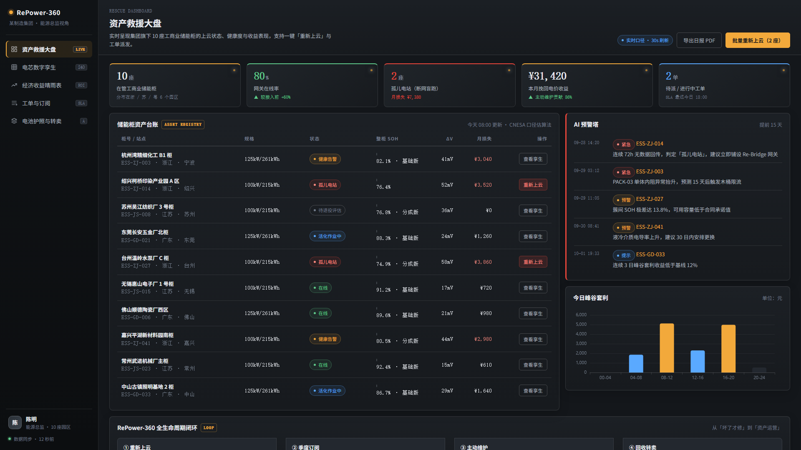
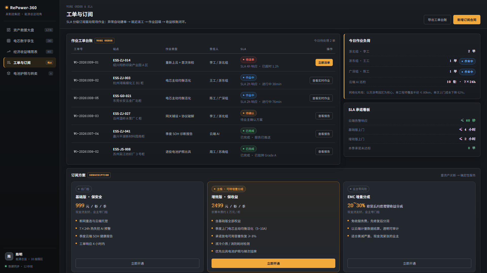
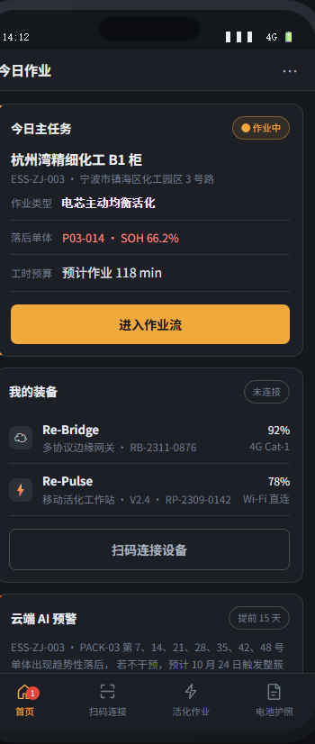
界面设计的重点不是好看，而是把"损失了多少元"直接摆在决策者面前——这是促成订阅的关键画面。
移动端则是给工程师用的作业流，强调"傻瓜式引导 + 安全报警"。
STEP 03 · PROACTIVE MAINTENANCE
痛点：出厂 BMS 仅有 50mA 弱被动均衡，追不平 280Ah / 314Ah 大电芯压差，单颗电芯衰退拖垮整柜收益（SOH 极差可达 14%）。 解法：云端先发现、中台再派单、工程师携 5~10A 大电流活化箱上门执行 —— 下面就是这条完整链路。
全链路关键词是「不拆解」：整包返厂要数周、运费高昂，我们 2 小时在厂区原位完成 —— 这正是工业设计要解决的问题：把实验室能力装进一个能拉杆带走的箱子里。
这一页就讲一条完整的链路，按左→中→右依次过：发现 → 下发 → 执行，三段分别发生在云端 / PC 中台 / 现场手机 App。
① 发现（云端 AI）：240 颗电芯数字孪生逐颗建档，热力矩阵直接暴露落后簇 PACK-03，簇间 ΔV 41mV；AI 提前 15 天报出内阻抬升、SOH 极差、液冷电导率三条恶化趋势，并定位到最弱单体 P03-014（SOH 66.2%）。最后算出月损失电费——先回答"这一趟值不值得跑"。
② 下发（PC 中台）：把"看到的问题"变成"有人去修"。中台一键下发活化作业 → 自动生成工单（含目标单体与预计工时 118 min）→ 立即派单，系统推荐工程师并给出预计到达时间；SLA 分级是云端告警 ≤60 秒、增效版上门 ≤2h、基础版 ≤4h。工单实时推送到工程师 App。
③ 执行（现场 App + Re-Pulse）：扫码即破解私有 CAN 协议、240/240 单体建档 → 快插探针免拆线开仓接线 → App 逐个导航落后单体（#007/#014/#021/#028/#035/#042/#048）→ 注入 5~10A，实时 8.4A，ΔV 从 41 回落到 12mV → 单体超 45℃ 自动降流并弹五步处置指引 → 完成卡显示挽回 11.4%、116 min、月增 ¥2,614，工单自动回填中台，形成闭环。
这部分也是实体产品存在的理由：算法只能告诉你哪颗电芯掉队，真正把它拉回来必须靠硬件。下一页先看这套作业流跑着的那块屏幕（P24），PART 3 再展开产品族本身（P31 起）。
PRINCIPLE & FEASIBILITY · 原理与实际可行性
即使单体电量相差 5%～10%，电压差也可能只有几毫伏；但放电末端，电量较低的单体会率先触及保护下限，导致整组电池提前停止放电。传统被动均衡速度慢，能量还会转化为热量损耗；本方案采用 5～10A 双向 DC/DC 主动均衡，将电量从电量较高的单体转移至落后单体。随着单体电量差异缩小，整组电池根据现实实验，将延后放电截止时间，提高可用容量。
边界：实时电压会受到充电电流影响，充电时可能暂时升高，停止后又会回落，因此不能直接作为修复成功的依据。验收应以静置后的电压差和定流放电容量测试为准，实时曲线仅用于过程监控。该方法主要适用于电芯电量不一致的情况，若电芯存在活性锂损失、析锂或内部短路等故障，则需更换电芯。
这一页只回答一个问题：为什么「注入 5~10A、ΔV 从 41 回落到 12mV」就能算维护成功？
按左栏四步讲：定位 → 定向注入 → 电量回填压差收敛 → 放电截止点后移、容量回升。背后是三个事实：可用容量由最弱单体决定（木桶）；电量 = 电流 × 时间；均衡速度与均衡电流成正比——所以毫安级追不平，安培级十几分钟就能回填数安时。
然后主动交代口径：实时 ΔV 含欧姆降与极化，注入时被瞬时抬高、停流会回落，验收要看停流静置后的 OCV 差与定流容量测试。这句话能挡掉一半质疑，也说明我们知道自己在测什么。
右侧六条都是可点开的真实来源，重点念两条：甘肃民乐项目 11 个月对比实测（开启均衡衰减 0.90%，关闭 6.74%，差 7 倍）；MPS 器件手册显示集成方案单芯片上限约 3A——这正是我们要做外挂独立 DC/DC 的理由，也是 Re-Pulse 存在的工程价值。
过渡：原理说清了，下一页看这套作业流跑着的那块屏幕。
DELIVERABLE 02 · UI DEMO
右侧为已完成的可交互网页 Demo（RePower-UI-Demo）实机渲染截图，非示意图； 配色与硬件 CMF 同源：石墨灰机身 + 琥珀状态灯 + 急停红。
建模出图时，将对应界面截图直接作为 10.1″ 屏幕贴图： 巡检工况选「电芯数字孪生」页，资产总览选「救援大盘」页， 现场作业语境配移动端「活化作业流」页。
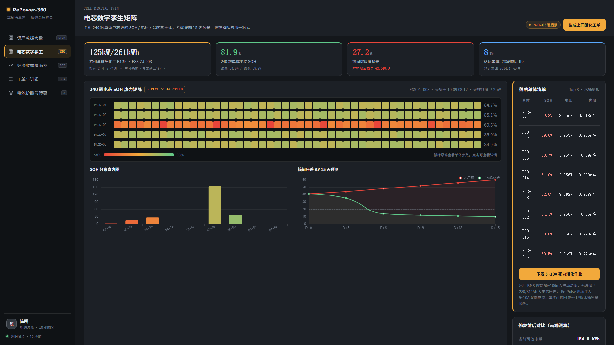
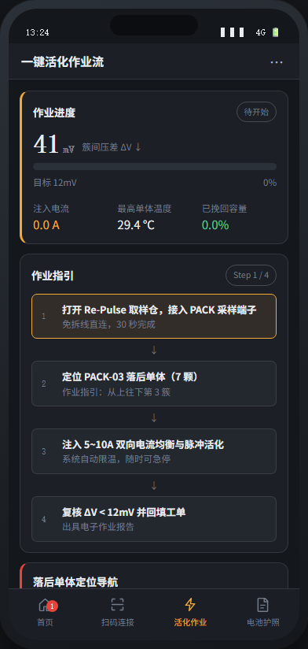
这一页紧跟界面 Demo：说明这些界面不是悬浮在网页里，而是直接跑在 Re-Pulse 的 10.1″ 屏幕上，与左侧旋钮、实体按钮、急停一起构成现场操作台。
强调屏幕内容必须建模：工业设备的专业感一半来自屏幕上的数据，空屏渲染会显得像道具。
右侧三张截图来自 RePower-UI-Demo 可交互网页（含 240 颗电芯 SOH 热力矩阵、AI 预警塔、活化进度条等真实交互），现场演示可直接打开网页录屏补充 MP4 交付物。
DELIVERABLE 02 · 客户如何获利 Ⅱ
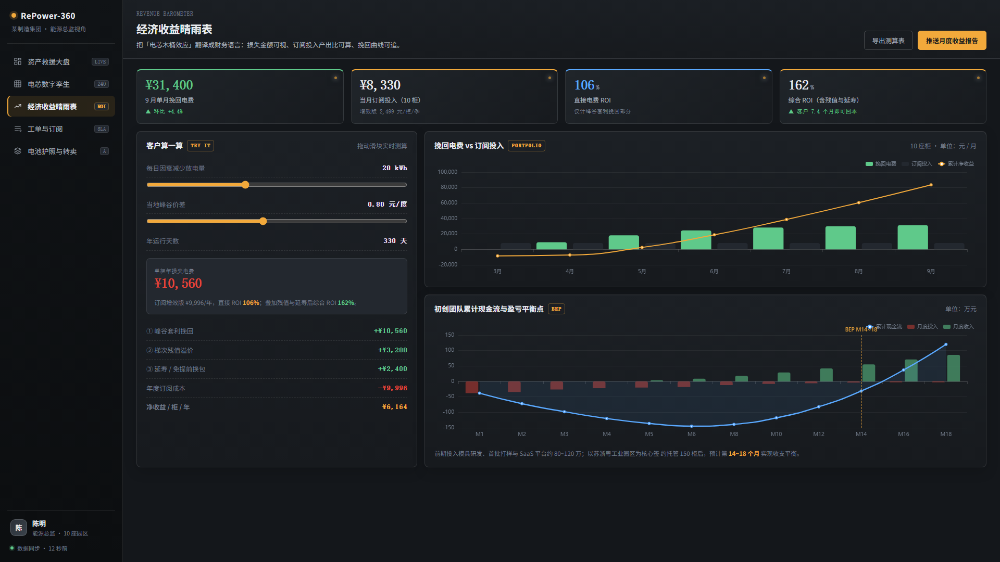
套利挽回 10,560 ＋ 残值溢价 3,200 ＋ 延寿免换包 2,400 － 年度订阅 9,996
＝ 净赚 6,164 元 / 柜 / 年
7.4 个月回本；这是保守口径，尚未计入安全增值与避免停机的隐性损失。
以上按珠三角高价差园区情景测算（价差 0.80 元/kWh、两充两放）； 峰谷价差更薄的区域改用 EMC 增量分成，客户零风险 —— 全部输入出处与计算明细见下两页（P26–27）。
直观在看得见的金额 · 真实在用业主自己的电价重算 · 正收益在扣掉订阅费后仍是净赚
这一屏是界面 Demo 里最能打动业主的一页：不讲技术，只讲钱。
讲的时候按屏幕从左到右、从上到下走一遍：① 顶部四张卡 —— 9 月单月挽回电费 ¥31,400、当月订阅投入 ¥8,330（10 柜）、直接电费 ROI 106%、综合 ROI 162%（客户 7.4 个月回本）；② 左上「客户算一算 · Try It」，两个滑块可以现场拖给业主看；③ 左下收益明细四行，最后一行「净收益 / 柜 / 年 ¥6,164」是全场结论；④ 右侧两张图，上面是 10 座柜的挽回电费 vs 订阅投入，下面是我们自己的累计现金流与 BEP（第 14~18 个月）。
为什么说"真实"：损失与收益都来自业主自己的电价与工况，不是行业平均值——滑块交到业主手里，他自己拖出来的数字他才认账。
为什么说"正收益"：把订阅费先扣掉再算，净收益仍是 +6,164 元 / 柜 / 年；而且这是保守口径，未计入安全增值与避免停机的隐性损失。
这也是现场演示最优的录屏起点：打开网页 → 拖一次滑块 → 让业主自己看到 ROI 的变化。
SOURCES · 客户如何获利 Ⅲ
| 输入参数 | 取值 | 出处与链接 |
|---|---|---|
| 单柜规格 | 100 kW / 215 kWh | 行业主流标准化规格（下一代主流为 125 kW / 261 kWh，搭载 314Ah 电芯）
https://wenku.baidu.com/view/97bccbf1f521dd36a32d7375a417866fb84ac0b7.html |
| 单次循环少放电量 | 20 kWh | = 215 kWh × 9.3%，落在「电芯不一致性造成 5%~15% 可用容量损失」的行业区间内
本方案测算（内部估值，非第三方统计） |
| 日等效循环次数 | 1.3 ~ 2.0 次 | 新政后江浙以「一充一放」为主（1~1.3 次）；午间设谷段地区可回升至「两充两放」（≈2 次）
https://baijiahao.baidu.com/s?id=1878536953219123134 |
| 年运行天数 | 330 天 | 工商业储能收益测算的行业通行取值（江苏 100kW 项目实测口径同）
https://baijiahao.baidu.com/s?id=1858883103111391776 |
| 峰谷加权价差 | 0.50 ~ 1.25 元/kWh | 广东珠三角五市 2026.1 最大峰谷价差 1.1577 元/kWh（全国第一）、2026.5 尖峰-低谷 1.25；
浙江 2026.7 新政后加权价差 0.5961；江苏 0.5473
https://baijiahao.baidu.com/s?id=1853715430853893650 https://www.nea.gov.cn/20251205/75d2da536b874479a07f0e1a2e11a781/c.html |
| 固定订阅定价合理性 | 3%~4% 投资额 | 储能电站年运维费用约占初始投资 3%~4%（约 170 元/kW·年）；本方案基础版 3,996 元/年正落在该区间
https://zhuanlan.zhihu.com/p/710635503 |
| 梯次利用溢价 | +50% | 欣旺达案例：回收 1,000 吨退役储能电池，梯次利用总价值 8,000 万元，比直接拆解（5,000 万元）提升 50%
https://baijiahao.baidu.com/s?id=1861872347605825459 |
| 退役电芯废料价 | 15,850~17,550 元/吨 | 2026.5 方壳磷酸铁锂废料回收报价；退役电芯容量衰减至 70%~80% 即进入梯次利用阶段
https://baijiahao.baidu.com/s?id=1865129642584005045 |
| 经济性判据 | 价差 ≥ 0.6 元/kWh | 储能 LCOS 约 0.38 元/kWh 时，峰谷价差需 ≥0.6 元/kWh 才具备经济性；全国已有 20 余省市达标
http://www.jingchengdianli.com/post/5304.html |
这一页是被追问时的挡箭牌：上一页每个输入都能指到出处。
重点说清哪几个是外部引用、哪一个是内部估值：除「单次循环少放电量 20 kWh」和后面的「延寿 2,400 元」是本方案测算外，其余全部来自公开可查的第三方数据。
峰谷价差要主动交代 2026 年的政策变化：广东珠三角仍在第一梯队（最大峰谷价差 1.1577 元/kWh，全国第一），而浙江 2026 年 7 月新政后加权价差从 0.8337 降到 0.5961、江苏降到 0.5473 —— 这个"收窄"恰恰是我们讲下一页情景矩阵的伏笔。
提醒：链接在电子版里可直接点击；纸面版可按机构名检索。
METHOD · 客户如何获利 Ⅳ
| 情景 | 峰谷价差 | 日循环 | 年套利挽回 | 综合 ROI |
|---|---|---|---|---|
| 广东珠三角五市 全国第一梯队 |
0.80 元/kWh | 2.0 次 | 10,560 元 | 161.7% |
| 江苏 2025.4 新政后 |
0.55 元/kWh | 1.5 次 | 5,445 元 | 110.5% |
| 浙江 2026.7 新政后 |
0.50 元/kWh | 1.3 次 | 4,290 元 | 98.9% |
综合收益 = 年套利挽回 ＋ 梯次残值溢价 3,200 ＋ 延寿收益 2,400； 综合 ROI = 综合收益 ÷ 年度订阅 9,996。 价差低于 0.55 元/kWh 时固定订阅不成立 → 自动切换 EMC 增量分成，客户零固定费用、零风险。
2026 电价新政正在压缩「纯峰谷套利」的空间 —— 价差越薄，越不能让木桶效应白白吃掉 9% 的可用容量：这就是后市场从「卖设备」转向「资产运营」的原因。
这一页回答"你凭什么说 162%"。左边是可以逐步复算的公式链，右边是换三个电价区之后的结论变化。
左边逐条念太慢，抓住第 ② 和第 ⑦ 两条就够：年套利挽回 = 单次少放电量 × 日循环 × 峰谷价差 × 330 天，其余都是加减。
右边是本页最有说服力的部分，要讲出"我们不是只有一个数字"：广东珠三角价差 0.80 时综合 ROI 161.7%（对应上一页）；江苏新政后 0.55 仍有 110.5%；浙江 2026 年 7 月新政后掉到 0.50、日循环降到 1.3 次，综合 ROI 98.9%，固定订阅就不再成立。
紧接着要给出对策，而不是留一个尴尬数字：价差低于 0.55 元/kWh 的地区，我们自动改用 EMC 增量分成 —— 客户不付固定费，我们从挽回的电费里抽 20%~30%。这样无论电价怎么变，业主都没有风险，我们也不会做亏本生意。这也正面回应了 P20「三档订阅」里为什么要有 EMC 这一档。
最后用底部一句收口：电价新政让纯套利变薄，反而把价值转移到"资产运营"——谁能让同一台柜子多放 9% 的电，谁就有生意。
STEP 04 · RESELL & CASCADING
储能柜使用 5~8 年后，容量衰减到 75% 无法满足峰谷套利，工厂只能以 「废铁 / 黑粉价」贱卖，残值不足原价 15%。
平台积累了全周期充放电健康数据，出具第三方权威认可的 SOH 残值评级证书（Grade A / B / C），让残值可证明、可交易。
翻新降压，溢价转卖做厂区电动叉车电池、低速观光车电池。
组装为离网光伏微网蓄电池或农业灌溉储能。
进入合规拆解回收流程，材料再生。
替业主多挽回 30%~50% 退役残值， 平台抽取 8% 撮合佣金。
这一步的价值在于：把"废铁"变成"有证书的商品"。没有健康数据，残值只能按重量卖；有了 SOH 评级，就能按容量卖。
而且这份数据只有我们有——从第一步上云就开始积累，别人补不上。
ECONOMICS · 我们如何盈利
网关硬件 1,500 元/台（毛利 50%）为一次性； 季度订阅 2,499 元/柜/季 → 约 1 万元/柜/年，是核心现金流； 退役柜残值 3~5 万元/柜，抽取 8% 平台服务费（2,400~4,000 元）。
一台 100kW/215kWh 柜在珠三角高价差园区情景下（价差 0.80 元/kWh、两充两放）， 年损失电费 20 × 2 × 0.8 × 330 ≈ 10,560 元；购买 9,996 元/年增效版订阅即可全额挽回， 另附梯次残值溢价 3,200 元与延寿免换包 2,400 元 → 综合净收益 +6,164 元/柜/年，综合 ROI ≈ 162%（口径与 P25、P26–27 一致）。
先看右图讲客户侧：年损失 10,560 元，花 8千~1 万买服务，净挽回仍有 1,500 元以上，另外附赠安全和残值保障。
再看左图讲我方：订阅占约 68%，是绝对主力现金流；硬件一次性、佣金长尾为辅。
BREAK-EVEN · 盈利周期测算
峰谷价差大 → 业主损失感知强；柜机密度高 → 单趟上门可服务多台，摊薄差旅成本。
单次上门成本 500~1000 元是行业死穴；密度决定毛利，所以先做深一个园区，再复制。
第 18 个月后，首批托管柜陆续进入退役期，梯次二手转卖带来第二增长曲线。
这一页只讲一张图：曲线穿过 0 轴的那一刻就是盈亏平衡点。按四个假设推演，曲线在第 17 个月前后归零，落在文档的 14~18 月区间内。
图下的四条假设就是全部前提，被追问时逐条摊开；若问"150 台怎么来"：苏浙粤工业园区数以万计存量柜，且孤儿电站无人服务，转化率假设保守。
两个硬件，一套设计语言：概念与功能 · 关键尺寸 → 形态渲染 → CMF → 结构细节 → 效果图与 3D
第三部分回到产品本身：前面证明了机会、定义了服务，这一部分回答"我们拿什么产品去交付"——先讲两个产品各自是什么、能干什么，再看它们长什么样、由哪些细节支撑。
结构：产品族总览 → Re-Pulse / Re-Bridge 各一页详解（含关键尺寸）→ 形态渲染 → CMF · 结构细节 → 效果图与 3D。
PRODUCT FAMILY · 硬件切入
把实验室级的大电流均衡能力装进一只单人可移动的加固箱—— 储能柜不拆包、不返厂，在原位 2 小时内完成电芯级诊断与活化。
一只 145 × 85 × 32 mm 的小盒子，磁吸进柜即可破解私有协议、 把「孤儿电站」重新接上云端——它是后续所有服务的数据入口。
网关每天在岗盯数据、发预警；工作站按需上门动手，把告警变成恢复的容量。
网关发现 → 中台派单 → 工程师携 Re-Pulse 执行 → 结果回填云档案，数据越滚越厚。
探针 / Adapter / 磁吸与 DIN 底座与两台主机共用同一套设计语言： 保护框 · 状态灯 · 模块化接口，构成完整 RE-ENERGY 硬件体系。
这一页先回答"我们交的是什么产品"：两个硬件，一个动手、一个联网，各自用一句概念 + 四条核心功能讲清。
Re-Pulse 的关键词是"不拆包、不返厂、原位 2 小时"——把实验室能力装进拉杆箱；Re-Bridge 的关键词是"数据入口"——硬件可以不赚钱，但它锁定后续所有服务。
底下三张卡讲两者的关系：分工、闭环、产品族。讲完这页，接下来两页分别展开两个产品的概念与功能。
RE-PULSE · 移动式储能电芯主动活化工作站
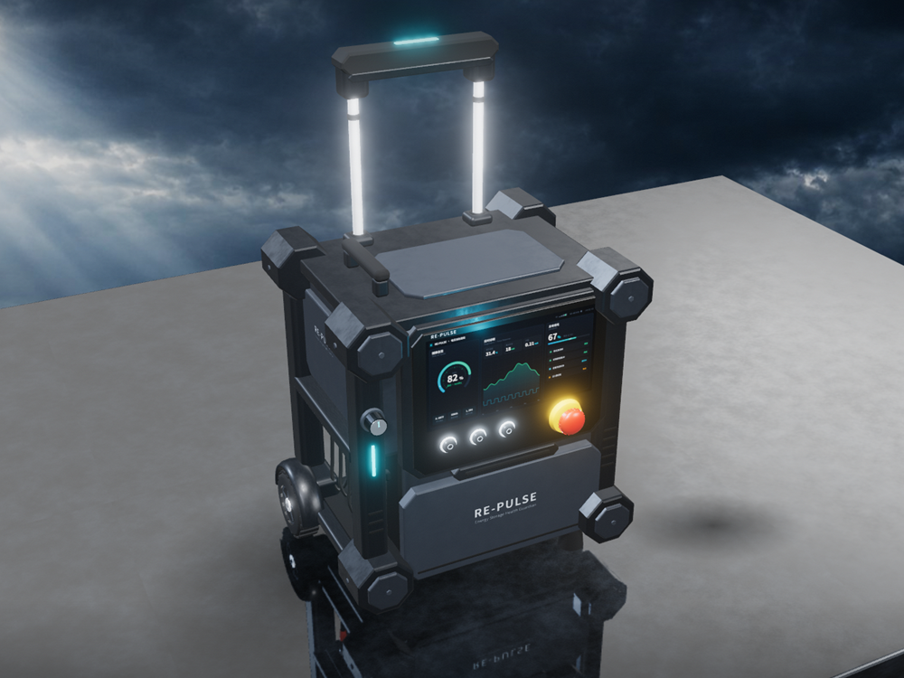
保护框 + 防撞角 · 10.1″ 屏幕 · 急停 · 侧面探针仓与卷线仓 · 双杆拉杆
一台单人可移动的电芯级「体检 + 治疗」一体机：开到柜边服役，不拆包、不返厂。
一句话：Re-Pulse 把实验室的大电流均衡能力，装进了一个能拉杆带走的箱子里 —— 这是「主动维护」服务得以成立的实体支点。
这一页只讲 Re-Pulse：它是什么、干什么、长什么样。左边渲染图可直接指着讲特征：屏幕、急停、探针仓、防撞角、拉杆。
右侧四步作业链路与 P23「主动维护」的现场执行环节一一对应，可以回指："云端发现、中台派单之后，真正动手的就是它"。
右下「关键尺寸」卡就是可直接建模的尺寸表：主体 520 × 360 × 210 mm、拉杆展开 950–1050 mm、10.1″ 屏、急停 35–45 mm、轮径 70–90 mm、探针 1 主探头 + 3 Adapter；念两行即可，被问到再展开。
RE-BRIDGE · 磁吸式多协议边缘网关
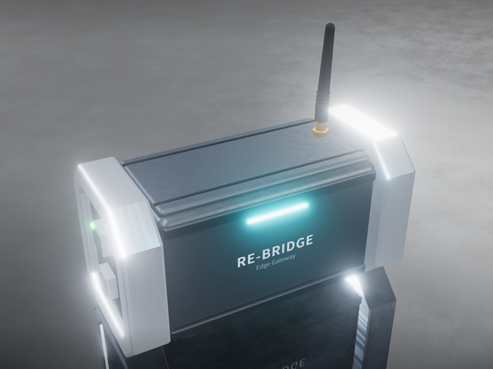
三段式金属端板 · 细光带状态灯 · 磁吸 / DIN 可换底座 · 两侧出线
一只 145 × 85 × 32 mm 的边缘数字化网关：吸附进柜内，把私有协议翻译成标准数据。
快速巡检 → 磁吸一推一扣；长期部署 → DIN 导轨固定。 网关本身不是利润中心，却是诊断 · 派单 · 残值认证三项收入的唯一入口。
这一页只讲 Re-Bridge：它解决的是 P19「重新上云」的落地问题——协议闭源、断网盲跑的孤儿柜，靠它重新接入云端。
左边是 3D 页实时渲染截图，指着讲三处：金属端板、细光带状态灯、可换底座；右边规格表念两行就够——机身尺寸和双通道上行。
收尾落到商业逻辑：入口设备，不是利润中心；两种安装场景对应磁吸与 DIN 两款配件，可拆可换本身就是「后市场」理念在工业设计上的体现。
RENDER · 形态与等比
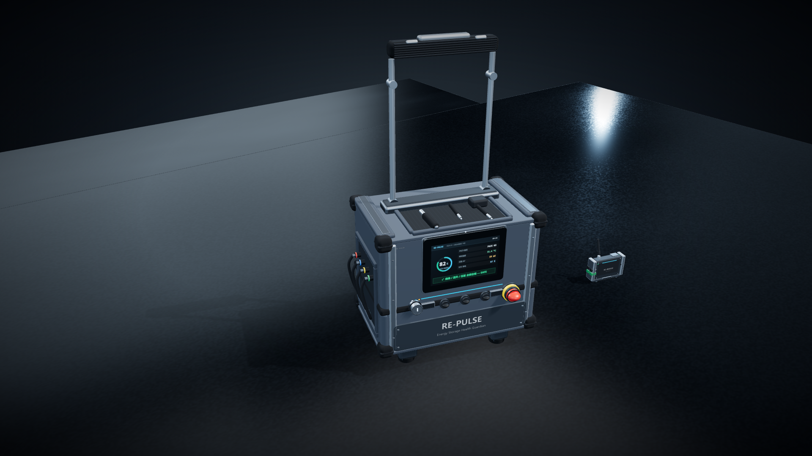
这一页用渲染示意图替代原来的三视图，直接把"设计完的实物长什么样"摊在评委面前：520 宽 × 360 深 × 210 高，拉杆展开后最大高度 950~1050 mm。
强调它是实时渲染截图，不是概念插画——模型已经在 3D 页面里跑起来了，比例、分模、CMF 都已落地，可以直接进入 CAD 出图。
指着屏幕说三处细节：SOH 82% 的屏幕 UI、侧面的探针仓与卷线仓、四角外凸的防撞角——这三处最能说明"这是设备，不是箱子"。
过渡：比例锁定之后，接下来讲机身色彩材质与结构细节，都是可以直接落地的建模依据。
CMF · 一套定死的配色
原则：不要大量使用蓝紫渐变。「数字化」应该通过屏幕体现， 而不是通过机身颜色体现。红色只允许出现在急停按钮，不扩散到全机。
色卡页可以指着说：机身只有灰阶，唯一的彩色是急停的红+黄——这是安全语义，不是装饰。
状态灯只在启动/联网/异常时点亮，颜色有明确定义（白启动、蓝联网、绿正常、黄异常、红故障）。
DETAIL · 关键结构细节
四角设置独立 TPU / 橡胶防撞角，略微突出主体，不是简单做四个黑色圆角。 直接表达"设备经常被搬运、放置、碰撞"。
中间主体略微下沉、两侧形成保护边框，形成可放置工具的工作区； 红色急停放在右上最易触及处，直径 35–45 mm。
后部集中解决散热 / 电源 / 通信 / 线缆；散热孔做成横向百叶窗， 而不是电脑式圆孔。
类似专业摄影箱 / 仪器箱的双杆伸缩结构，TPE 防滑握把； 采用两个大轮 + 前部两个支撑脚，更像专业设备箱而非行李箱。
底部必须有防滑脚、排水结构、维修盖与螺丝固定点； IP65 通过密封圈 + 搭扣 + 防水结构在视觉上体现。
五个细节里最值得展开的是防撞角和两大轮+支撑脚——这两处决定了它看起来像"仪器"还是"行李箱"。
急停按钮讲清楚：它是安全停止控制，不是"防爆断电"，语义要准确，建模时做得大一点以强化识别性。
RENDER · 产品效果图
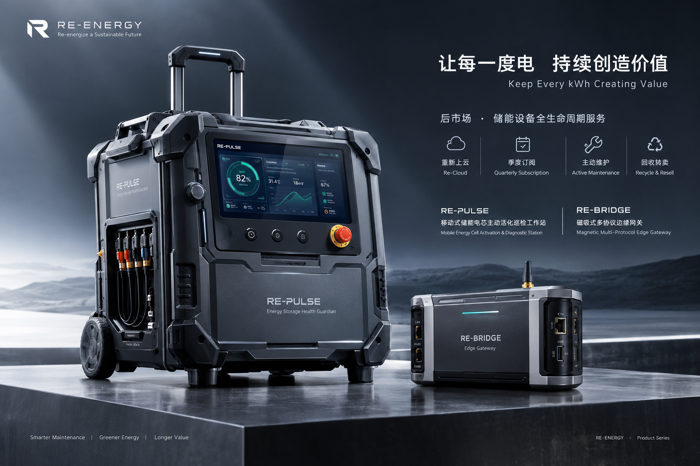
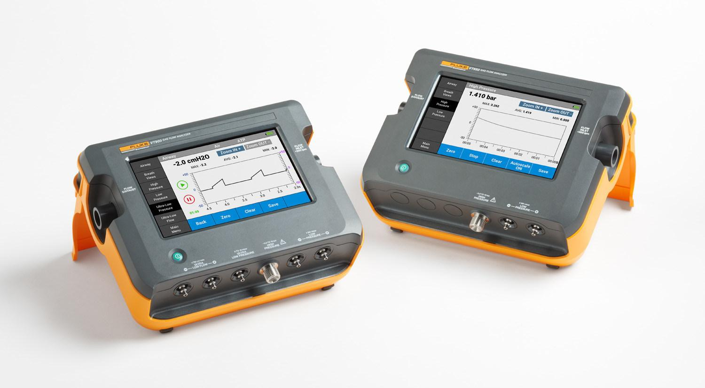
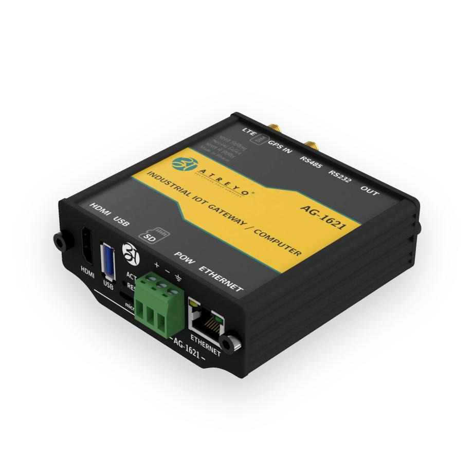
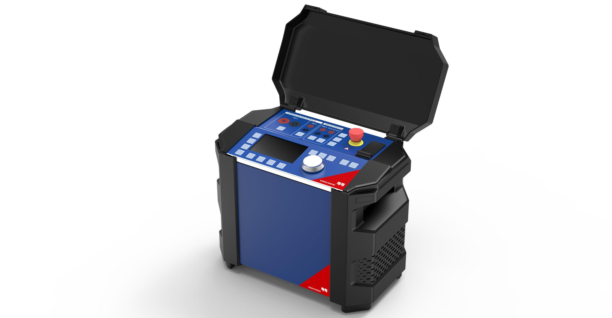
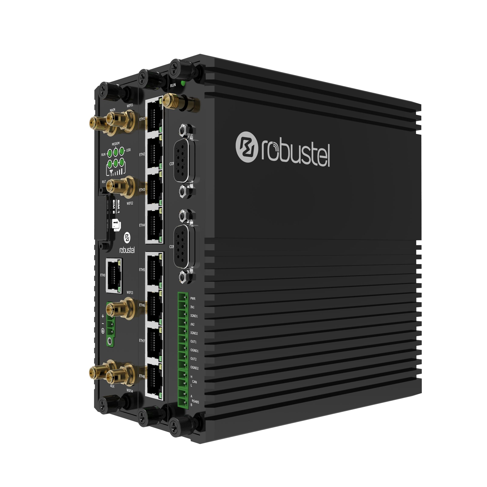
现场演示时可以在这里切出去播放 3D 页面（或提前录成 MP4 插入）。
展示重点：屏幕 UI、探针仓、防撞角、拉杆与轮子、Re-Bridge 的三段式结构。
三句话结论 · 对照任务书逐条交付 · 使用的 AI 工具与版本 · 下一步里程碑
最后一部分做收口：把 39 页压成三句话，再逐条对照任务书，最后按题目要求声明 AI 工具与版本。
CONCLUSION · 三句话结论
工商业储能柜正从「增量建设期」转向存量维保期；2022—2024 年的存量重资产 正集中迈入第 3~5 年的性能衰减拐点，后市场具备千亿级刚需空间。
原厂 BMS 存在三大致命弱点：LFP 平坦电压导致 SOH 测不准、 毫安级被动均衡治不了大容量电芯、倒闭潮导致孤儿电站激增。
实体硬件做现场移动手术刀，软件 Demo做诊断中枢， 商业模式用增量分成 + 耗材订阅 + 梯次认证流转闭环造血。
一句话：让每一度电持续创造价值 —— 不让任何一台还能用的储能柜，因为几百颗电芯不齐而被提前报废。
收尾部分语速放慢，三句话逐句停顿。
最后那句 slogan 可以留 2 秒空白再翻页。
DELIVERABLES · 对照设计任务书 2-1
| 题目要求的交付物 | 本方案的交付内容 | 所在位置 |
|---|---|---|
| 后市场潜力调研简报 | 发展阶段（存量 / 设备健康趋势 / 孤儿电站）、发展预期、四大细分板块、未被挖掘的商业模式 | PART 1 · P5–16 |
| 物理实体产品 （3D 文件、效果图） |
Re-Pulse 活化工作站 + Re-Bridge 网关：概念与功能、尺寸、CMF、结构细节、效果图 | PART 3 · P31–38 |
| 移动端 / PC 端界面 Demo | PC 资产救援中台（救援大盘 / 电芯孪生矩阵 / 收益晴雨表）+ 移动 App 作业流 + Re-Pulse 屏幕 HMI；3D 交互展示页 | P22 · P24–27 · P38（MP4） |
| 商业模式与盈利周期 | 四支柱闭环、收入结构、客户 ROI > 150%、投入 80–120 万、BEP 第 14–18 个月 | P29–30 |
网页版 PPT（本文件）→ 可全屏演示、一键导出 PDF、录屏交付。
MP4 录屏：PC 中台操作流 + App 现场作业流 + 3D 滚动展示。
PDF（或本 HTML 打包）+ MP4，发送至作业邮箱。
这一页给评委做对照检查，说明四项交付物一项不落。
如果需要提交单文件，可以把本 HTML 与 assets 一起打包；导出 PDF 时请在浏览器打印设置里选择 横向、无边距、背景图形。
DISCLOSURE · 使用的 AI 工具与版本
| 环节 | 使用的 AI 工具 | 版本 / 说明 |
|---|---|---|
| 行业调研资料检索与整理 | Gemini 3.8 Flash | 据说Gemini依托谷歌，数据库最全 |
| 方案框架与商业测算推演 | ChatGPT | GPT-6 |
| 产品效果图 / 造型参考生成 | GPT-image | 无 |
| 网页 PPT 排版与制作 | Hy4 preview High/Deepseek-V4.1-Flash | 主要依靠自制skills与code Buddy配置好的编程环境 |
| 3D 交互展示页 | claude-opus-5.5-high | 在arena.ai里持续抽卡，最终最佳效果 |
提醒：任务书明确要求"注明使用的 AI 工具名称和版本"，表中五行的工具与版本均已逐一填写，请再与实际使用情况核对一遍。
最后给评委一个时间计划，说明这份方案不是终点，而是已经进入执行阶段的起点。